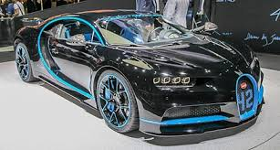
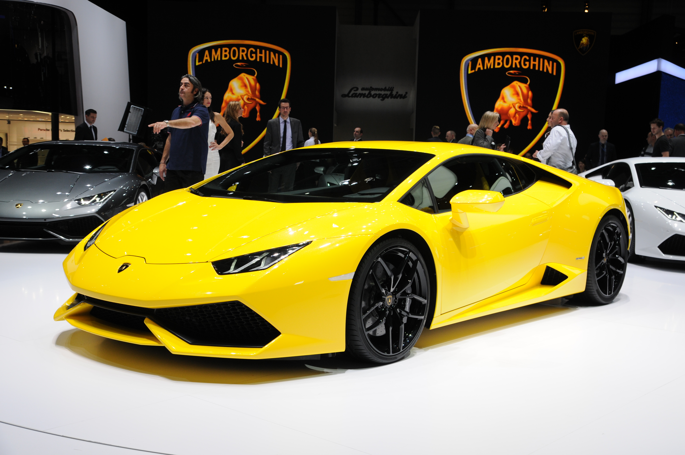
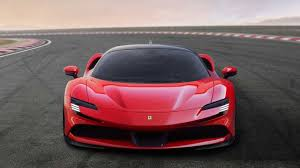
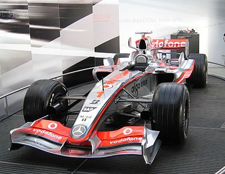

Bugatti Veyron е хиперкола на компанията Bugatti, произвеждана от 2005 до 2015 г. Наречена е в чест на френския състезател Пиер Вейрон, победител от 1939 г. в състезанието 24 часа на Льо Ман. През 2010 г. списанията Top Gear и Robb Report присъждат наградата „Автомобил на десетилетието“ на Bugatti Veyron и неговата модификация Grand Sport, съответно. Модификацията Super Sport през 2010 г. подобрява световния рекорд за скорост и става най-бързия сериен автомобил в света. Производството на Veyron към момента е приключено, общо са продадени 450 автомобила: 300 купе и 150 роудстъри. Наследник на Bugatti Veyron е Bugatti Chiron, официално представен на женевския автосалон през 2016 г..

Ламборгини С.п.А. е италиански производител на суперавтомобили и тракторна техника. Намира се в градчето Сант'Агата Болонезе, близо до Болоня, Италия. Компанията е основана през 1963 г. от Феручо Ламборгини, който искал да произвежда автомобили, конкуриращи моделите от доказани марки, на първо място тези на Ферари. Първите модели на компанията са пуснати в средата на 60-те години и се отличават със своята изтънченост, мощност и комфорт. Самият Ламборгини притежавал компанията още 9 години след основаването ѝ. Днес компанията е притежание на Ауди.

Ferrari S.p.A. (Ферари АД) е италиански производител на спортни автомобили, разположен в градовете Маранело и Модена, Италия. Колите на Ferrari са едни от най-желаните за притежание и шофиране. Те също са и един от символите за доброто финансово състояние на притежателите им.Компанията е придобила известност през годините б лагодарение на непрекъснатото ѝ участие в автомобилни състезания и най-вече във Формула 1, където се радва на значителни успехи, особено през 50-те, 60-те и 70-те години на 20 век, както и в края на 20 и началото на 21 в. Фирмата притежава и серия маркови продукти, носещи търговската марка „Ferrari“, сред които могат да бъдат открити очила, химикалки, парфюми, дрехи, високотехнологични велосипеди, мобилни телефони и преносими компютри. В класацията на Financial Times на „Стоте най-добри работни места в Европа“ (за производители на стоки) за 2007 г., Ferrari е поставена на първо място.

Макларън-Рено е отбор от Формула 1. Основан е през 1963 година от Брус Макларън (1937–1970). Осем пъти е печелил Световния шампионат при конструкторите във Формула 1, а негови пилоти 12 пъти са ставали шампиони. Болиди, конструирани от Макларън, са печелили още Индианаполис 500, Канадско-Американската Челъндж Къп и „24-те часа на Льо Ман“. Собственик е Рон Денис.Макларън е един от най-успешните отбори в историята на Формула 1, има 156 победи, 12 титли при пилотите и 8 при конструкторите.

НАЙ- БЪРЗИТЕ КОЛИ